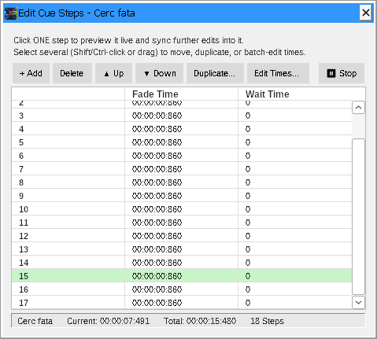

For: FullPlayer
The steps of a button, one under another: right click on the button > Edit Cue Steps.... A step holds the values of the channels, a Fade Time - how long the light takes to get to it - and a Wait Time - how long it stays before the next step. Every change is applied to the open project at once; Save writes it into the project's file.

The steps of Cerc fata while it runs: the step playing is marked (here 15). At the bottom the button, the time it is at, the time of all its steps and the number of steps.
Click one step: its values are put on the channels - the General Mixer, the fixtures and the 3D show it - and every channel you move afterwards, in the General Mixer, in Fixture Control or on the DMX Board (Reset, Set >255, its fader), is written into that step. With several steps selected, what you move is written into all of them - for example: select the steps, select the channels on the DMX Board, Reset: those channels become 0 in every selected step. Select several with Shift or Ctrl and a click, or by dragging over them.
A button you start while a step is selected (a move, for example) does not write into the step: the channels it sends stay as the step has them, also after it stops - unless you move them yourself (by hand they become MAN and go in). After Edit Times... the steps stay selected, so you can see where what you move goes.
To rename a step, click its first column again when it is already selected; type the name, then Enter (or a click elsewhere) keeps it, Esc cancels.
| Button | What it does |
|---|---|
| + Add | A new step after the selected one (or at the end), with the channels as they are now and the last times used. The new step is selected: what you move next goes into it. |
| Delete | Deletes the selected steps. |
| ▲ Up, ▼ Down | Move the selected steps one place. |
| Duplicate... | Copies of the selected steps, after the last of them: Multiplier (how many copies). |
| Edit Times... | Sets the Fade Time and the Wait Time (hours : minutes : seconds : milliseconds; hold an arrow to count fast). Set time for: the fade, the wait or both; Change for: the selected steps or all of them. |
| Play / Stop | Starts or stops the button, without closing the window. |
The same window opens from the Library for its light sequences, and from the Show Editor for the objects of a show.